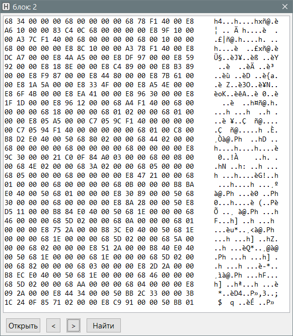

HexViewer
Назначение
Просмотр бинарного файла в шестнадцатеричном виде.

При поиске на данный момент находит только первое совпадение и латинскими буквами с учётом регистра.
Стрелками-кнопками (не клавиатурой) можно листать страницы. Листать назад чтобы сразу перейти к концу файла.